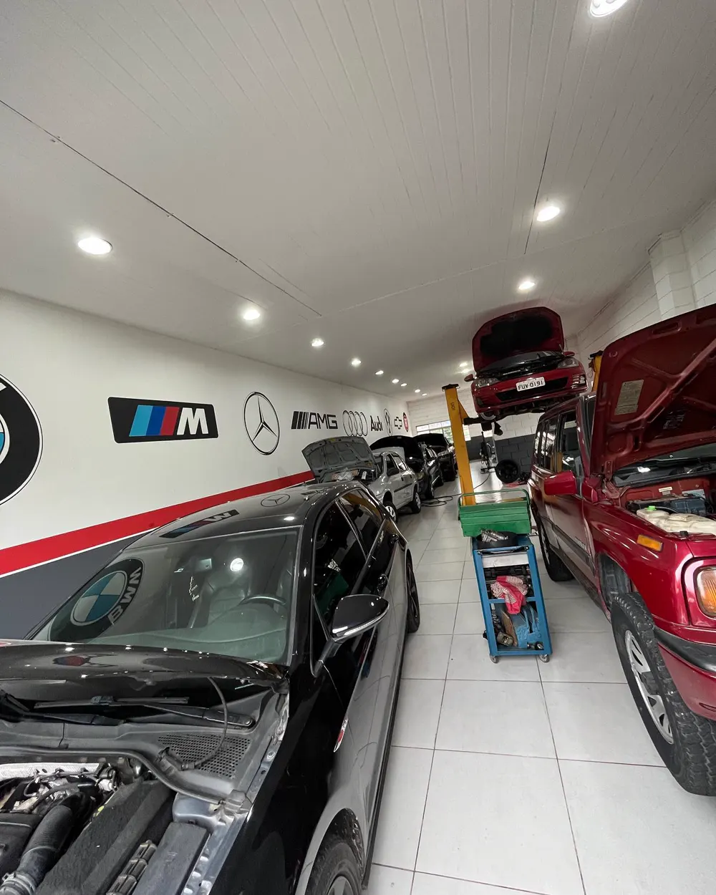
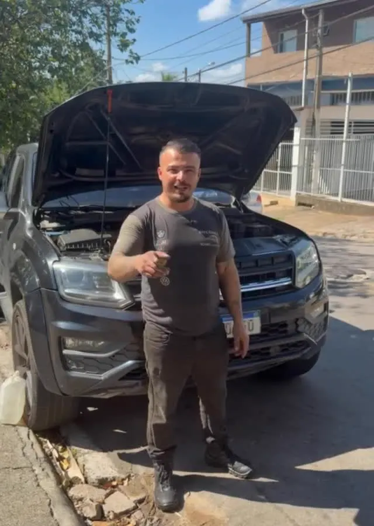
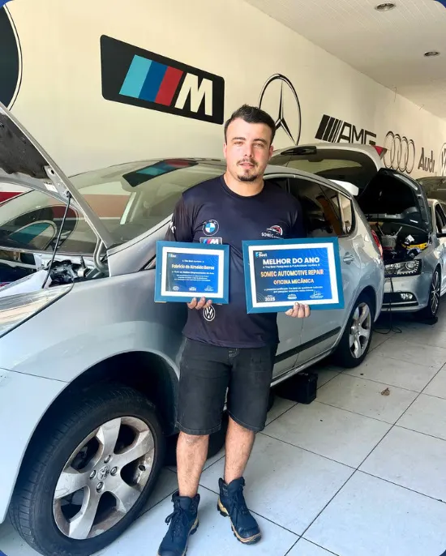
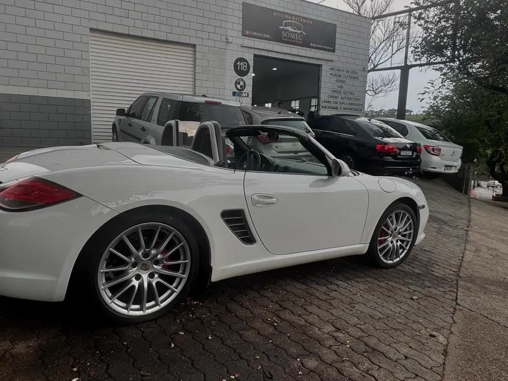
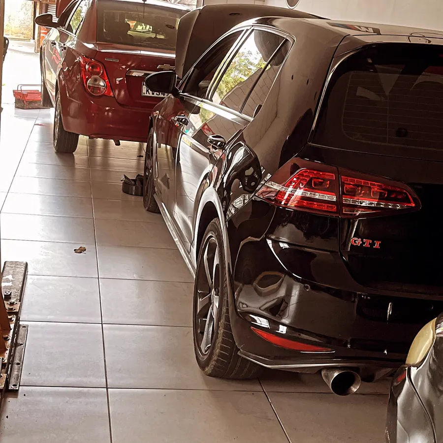
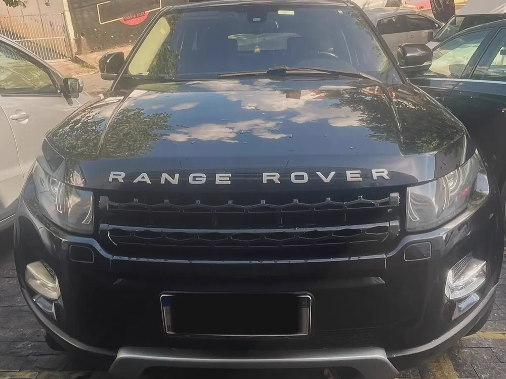
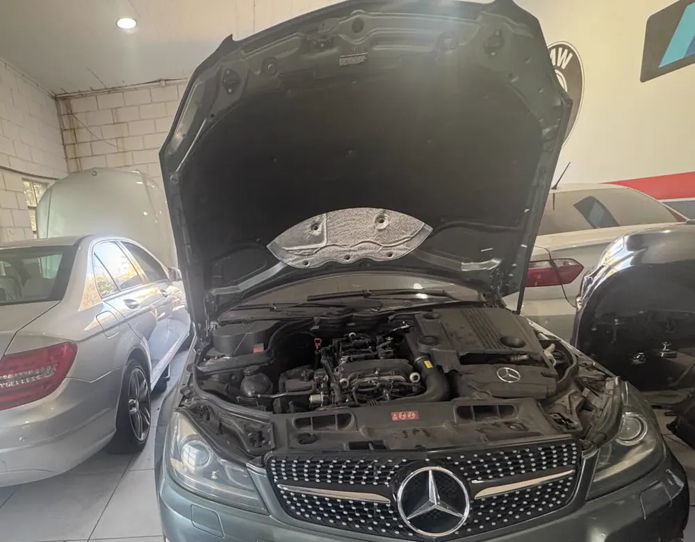
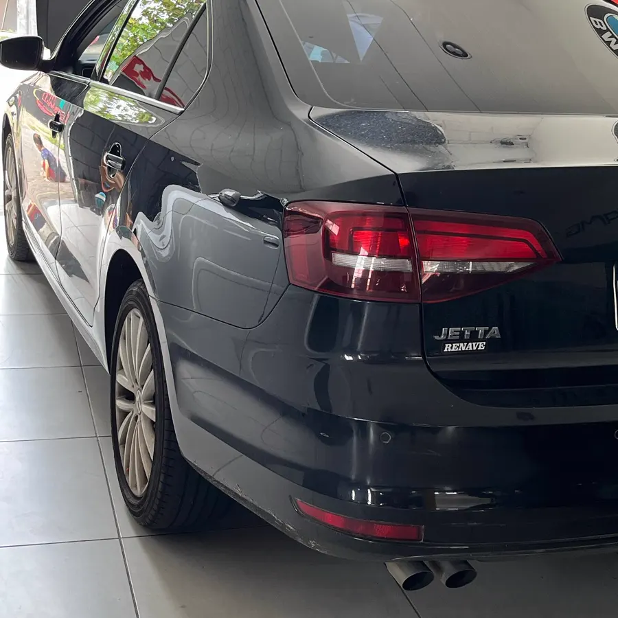
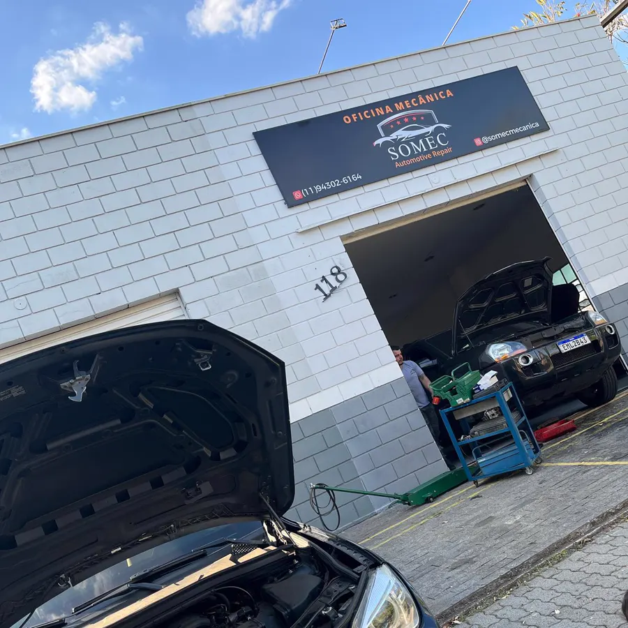

Mecânica de precisão para nacionais e importados.
Oficina premium em Jundiaí, no Jardim das Tulipas.
Câmbio DSG, dupla embreagem e automatizado.
É o câmbio que muita oficina prefere não abrir. Na Somec ele é desmontado, diagnosticado peça por peça e montado de volta do jeito certo.
Sinais de que vale uma avaliação:
- Trancos ou demora nas trocas de marcha
- Carro patinando ao sair
- Luz de falha da transmissão no painel
- Ruído ou vibração em baixa velocidade
O que mais a gente resolve.
- Injeção eletrônica
- Falhas, consumo alto, perda de força e luz de injeção acesa.
- Airbag e ABS
- Diagnóstico e reparo dos sistemas de segurança e das luzes de alerta no painel.
- Motor
- Do ajuste ao motor completo, com orçamento aprovado antes de começar.
- Freios e suspensão
- Pastilhas, discos, amortecedores e aqueles barulhos que aparecem nas lombadas.
- Revisão preventiva
- Revisão completa para rodar tranquilo e evitar que um problema pequeno vire um grande.
- Mecânica geral
- Manutenção do dia a dia para carros nacionais e importados.
Como funciona o atendimento.
-
Você chama no WhatsApp
Conte o modelo do carro e o que está acontecendo. A gente já agenda o melhor horário.
-
Diagnóstico na oficina
O carro passa por uma avaliação completa e você recebe a explicação do que foi encontrado, sem termos complicados.
-
Orçamento antes do serviço
Nada é feito sem a sua aprovação. Depois é só buscar o carro pronto, no prazo combinado.

Uma oficina que nasceu de um sonho.
A Somec começou como o projeto de abrir uma oficina própria em Jundiaí, com o cuidado que a gente gostaria de receber como cliente. Em pouco tempo virou referência na região e recebeu o prêmio The Best Jundiaí 2024.
O jeito de trabalhar continua o mesmo: explicar cada detalhe, cobrar o preço justo e devolver o carro como se fosse nosso.


Quem já deixou o carro aqui.
Excelente profissional, cordial, e o mais importante: explica direitinho o que está fazendo no seu carro.
Fiz o motor completo do meu carro com o melhor orçamento que encontrei e ficou top. Transparência total nos valores.
Atendimento excelente, profissional bem preparado, preço justo. Confio muito no trabalho deles.
Nota 4,8 de 5 em 41 avaliações no Google.
Alguns carros que passaram pela Somec.






Traga seu carro para uma avaliação.
Rua João Manzan, 118Jardim das Tulipas, Jundiaí, SP
Segunda a sexta, das 8h às 18h